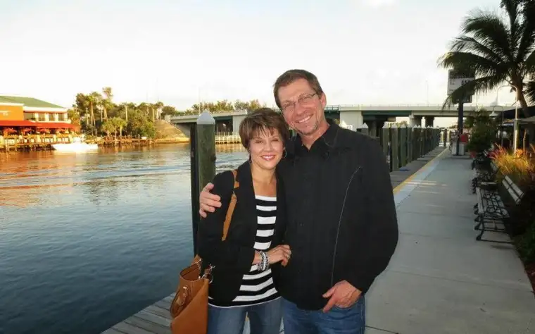

SPRINGFIELD, Mo. — At age 15, Jennifer Rothschild was, like most of her peers, busy studying for her driver’s license test, but she was struggling to read the driver’s handbook.
Frustrated, she sneaked into her parent’s room to find the magnifying glass they kept in a drawer to help her prepare.
“I soon realized that if I couldn’t read my driver’s handbook, I probably couldn’t see well enough to drive on the roads, either,” Rothschild says. “At that age, you’re already going through all kinds of transitions, but this was one of the hardest; my identity really took a hit.”
It wasn’t just temporary blurred vision after all, as she’d learn, but the effects of a rare eye disease that would render her blind.
“School was hard, of course, because I could no longer read, and I didn’t learn braille right away — in fact, I still don’t know braille well. I’m afraid I’m a bad role model for blind people,” she says sheepishly. “But I learned how to listen very keenly and memorize what was being said. I learned how to be a student in a nontraditional way.”
Along with facing the reality of her condition, Rothschild had to confront a dying dream: She’d planned to become a visual artist, and that was no longer possible. In time, she brought her creative yearnings from the canvas to the keys.
“I transferred that gift and desire for art and began to play by ear and write songs at the keyboard,” she says. “And now, 40 years later, I’m still communicating through writing books and speaking.”
Rothschild also started “Fresh Grounded Faith,” bringing together women from different faith communities for encouragement. Along with best-selling author and speaker Sheila Walsh and worship leader Michael O’Brien, she will present this event locally on Friday, Oct. 25, and Saturday, Oct. 26, at Hope Lutheran Church’s south Fargo campus.
Area co-coordinators Judy Siegle and Kathy Spriggs of the Women’s Ministry Network say having Rothschild’s team come to Fargo was set in motion about a year and a half ago.
“I love the theme of one event for many churches,” Siegle says. “We’re all in this together, and when we can join forces, it’s a beautiful thing.”
Spriggs says a team of 150 volunteers has been mobilized, involving 21 team leaders from different churches and denominations from around the region. “It’s been amazing to watch the unity within, not just North Dakota but also Minnesota,” she says.
O’Brien’s worship topic, “Unshakable,” comes from Psalm 62:3.
“He is my rock and my salvation,” Spriggs says. “I think that’s important, because as women, we get shaken up a lot.”
“We have pressures and problems and people even can sometimes pull us down,” Siegle offers, “but we also have God, who is unshakable.”
“Just in the volunteer work I do, what I see is, with women, fear and anxiety can take hold,” Spriggs says. “Satan wants us to be fearful…We need to remember to let God be in control.”
Siegle says we all need encouragement, hope and the message that God in Jesus Christ is with us.
“I believe so strongly that when truth is proclaimed and the name of Jesus lifted high, there’s an outpouring of God’s spirit,” she says.
As of earlier this week, nearly 900 women had signed up for the event, but the coordinators hope the church will fill to its 1,100-attendee capacity.
“Jennifer’s got an incredible testimony,” Spriggs adds. “God has brought her through so much.”
‘An opportunity’
“Becoming blind was hard and challenging, but in retrospect, I see the gift,” Rothschild says. “It allowed me, much sooner than most, to refine my priorities, and quickly discern what I thought at age 15 was true.”
Growing up a pastor’s child, she says Christ was part of her everyday experience, but becoming blind made faith personal and real.
“It gave me an opportunity to see that even on our worst days, God is good, and sometimes the hard things that happen in our lives don’t have to be a dead end, but what God uses as a stepping stone to help us get to a better place,” she says.
Even her two younger brothers’ lives were changed by her affliction, Rothschild notes.
“What an interesting thing for them to observe. Talk about ending sibling rivalry quickly,” she says. “It’s not easy for a junior-high boy to walk his sister into high school on the first day of school.”
Rothschild says looking back, her parents may have had it the toughest.
“It takes a lot of grit and grace for a mom to have to watch a child suffer,” she says. “I just think there’s a unique grace God gives to the child who suffers, to bear that and walk through it.”
Rothschild says she wants the women of this area to know they are “She Can” women who are capable, through Christ, of overcoming any obstacle, drawing on Philippians 4:13, “I can do all things through Christ who strengthens me.”
“The adversity we dread is often the life we dream of,” she says.
If you go
What: “Fresh Grounded Faith” women’s event
When: 7-9:30 p.m. Friday, Oct. 25, and 9 a.m. to 12:30 p.m. Saturday, Oct. 26
Where: Hope Lutheran Church, 3636 25th St. S., Fargo
Info: $49 each for groups of 10 or more; $54 individual; $64 at the door (if available); for tickets, visit https://www.freshgroundedfaith.com/events or call 800-859-7992
[For the sake of having a repository for my newspaper columns and articles, I reprint them here, with permission, a week after their run date. The preceding ran in The Forum newspaper on Oct. 11, 2019.]